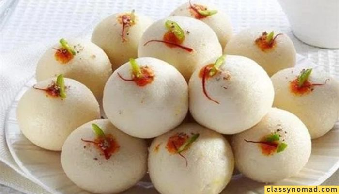
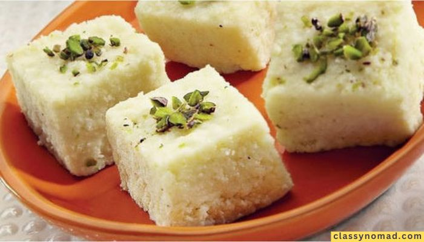
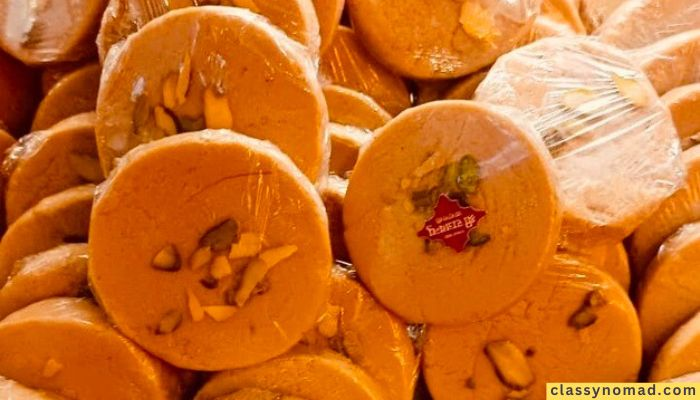
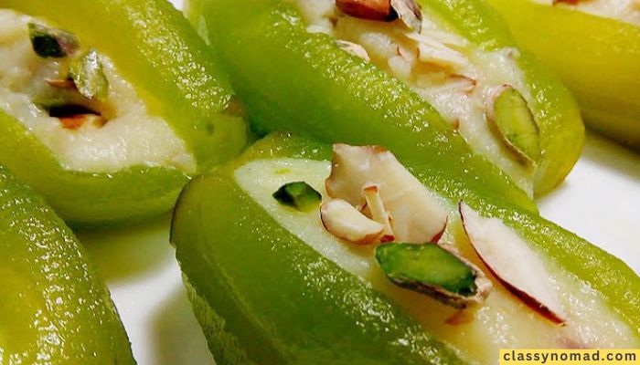
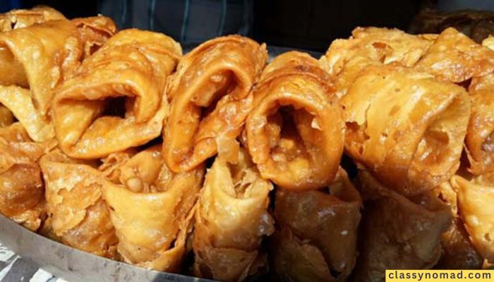
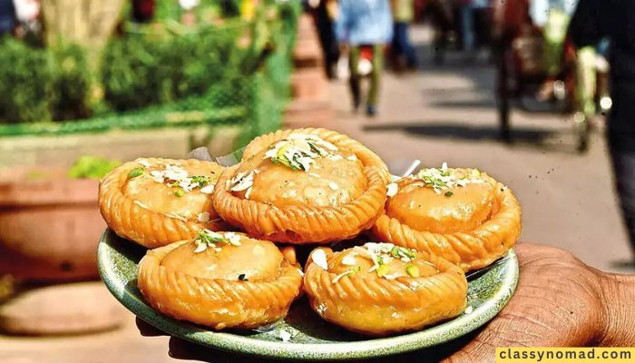

Best sweets in Varanasi
If you are looking for the best sweets in Varanasi, you have come to the right place.
As a local who has visited Varanasi a couple of times, I know which are the best sweets one should definitely try in Varanasi.
Varanasi, also known as Kashi, is one of the oldest and holiest cities in India. Besides its amazing tourist sites and tasteful street foods, the city is also renowned for its delectable sweets. The traditional sweets of Varanasi are deeply ingrained in its culture and have a unique taste that appeals to both locals and visitors.
In this article, we will take you on a sweet journey through the narrow alleys of Varanasi to explore the best sweets in Varanasi that you must try when you visit this vibrant city.
Malai Laddu
If you have a sweet tooth, Malai Laddu is the treat for you. These soft, creamy laddus are made from milk solids, khoya, and are flavored with cardamom. The laddus are then rolled in desiccated coconut, adding a delightful texture to each bite.
The balance of sweetness and the richness of milk make Malai Laddu a heavenly experience for anyone with a penchant for sweets.

Banarasi Kalakand
No visit to Varanasi is complete without indulging in the heavenly taste of Banarasi Kalakand. Crafted from paneer (Indian cottage cheese), milk, and sugar, this milk-based delight has a grainy texture that adds a unique charm to its taste.
Infused with the essence of saffron and garnished with pistachios, Kalakand offers a delightful blend of flavors that will leave you craving for more.

Sohan Halwa
Sohan Halwa is a royal treat from Varanasi. Made from a rich concoction of milk, ghee, sugar, and topped with crunchy nuts, this halwa is a delicacy that oozes luxury.
The soft, velvety texture of Sohan Halwa will leave you craving for more with every bite.

Parval Mithai
A unique sweet of Varanasi, Parval Mithai is made from the pulp of pointed gourds blended with khoya, sugar, and various nuts. The resulting fudge-like consistency and distinct taste make it a must-try local specialty.

Lavanglata
Lavanglata, a traditional sweet of Varanasi, is a true feast for the senses. Its distinctive shape and heavenly aroma make it an irresistible choice for every sweet lover.
Made from ground cloves, sugar, and khoya (milk solids), this delicacy has a rich, spiced flavor that sets it apart from other sweets.

Chandrakala
Chandrakala, a crescent-shaped sweet delicacy, is a true representation of the rich culinary heritage of Varanasi.
Stuffed with a delectable mixture of khoya, dry fruits, and saffron, and drenched in sugar syrup, this dessert is a symphony of textures and flavors that will leave you enchanted.
